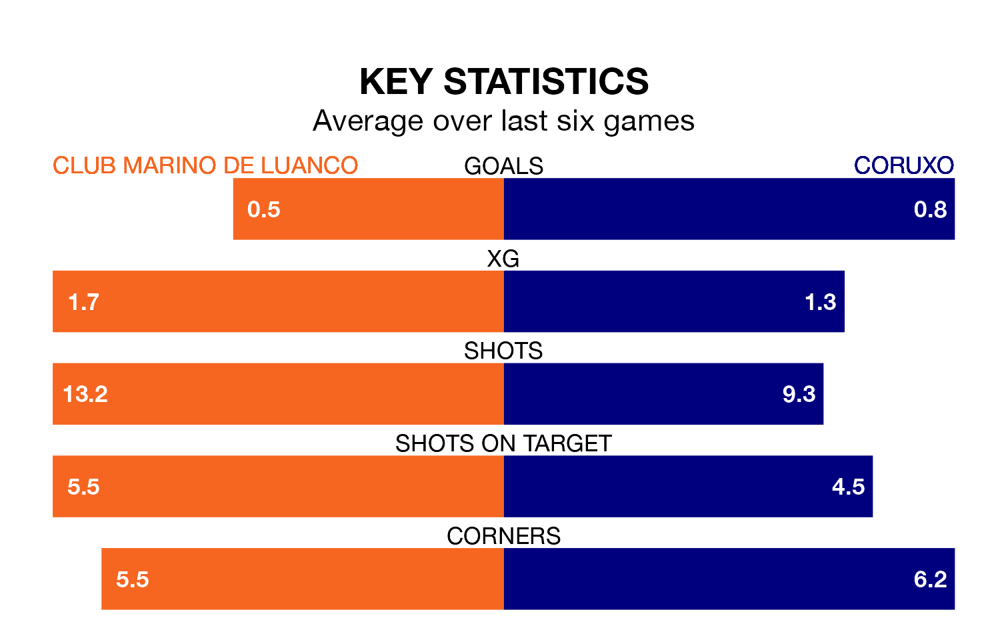

Coruxo come to Estadi Municipal de Miramar to play Club Marino de Luanco on Sunday in poor form, having collected just four points from their last six games.
The visitors have won one and drawn one of their last six fixtures, while Club Marino de Luanco have two wins and three draws.
In the last 10 years, Club Marino de Luanco and Coruxo have played each other on nine occasions. Club Marino de Luanco won two of them, Coruxo four, and they drew three times.
On average, Club Marino de Luanco scored 0.9 goals and Coruxo 1.3 in those matches.
Their last meeting was on November 5, when Coruxo won 2-1 at home.
With 20 goals in 26 games so far this season, Club Marino de Luanco are the league's second-lowest scorers with 0.8 goals per game. But they are conceding fewer than average too, letting in 17 goals at a rate of 0.7 per game.
Coruxo, meanwhile, are above average scorers, with 1.2 goals per game, compared to a league average of 1.1. They have conceded 1.5 goals per game.
The away team are 11th in the table after 26 games, of which they have won nine and drawn five, earning 32 points.
The hosts are one place ahead of Coruxo in 10th, with six wins and 14 draws putting them on the same number of points.
Club Marino de Luanco's last match was on March 10, a 1-0 loss against CD Guijuelo.
Coruxo beat Racing Santander B 2-0 last time out, also on March 10.
Updated: 15:10 (UTC), 15/03/24